Rumo ao Nacional
A equipe entra na reta final de preparação para a
competição nacional, ajustando estratégias e revisando o robô para representar com excelência.

Acervo Digital "DataCloud"
O projeto nasce com o objetivo de registrar e preservar a trajetória das equipes FRC do Brasil, criando um acervo digital acessível e organizado para futuras gerações.

CyberRise: Talentos da FLL
A equipe promove o torneio interno “CyberRise”, incentivando equipes de FLL a desenvolverem habilidades técnicas, espírito competitivo e colaboração por meio da robótica.
.jpg)
Destaque na Feira de Metalurgia
Durante dois dias de evento, a equipe apresentou seu robô ao público, compartilhando conhecimento, tecnologia e inspirando visitantes com inovação e engenharia.
.jpg)
Reconhecimento além da temporada
A participação no evento off-season de Porto Alegre rendeu à CyberRain um prêmio de destaque, reforçando a excelência técnica e o compromisso com a inovação na robótica.
Equipe
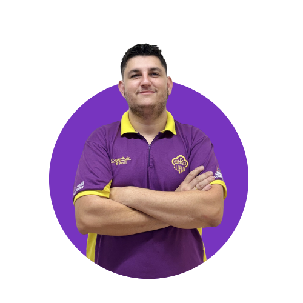
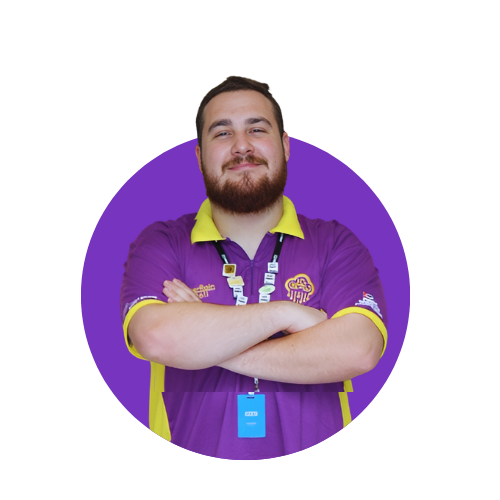
Jean Hoffman & Leopoldo Goedert
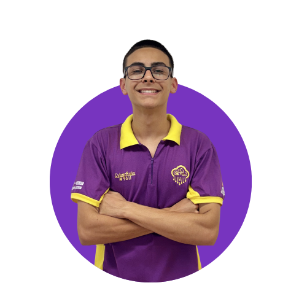
Vinícius Stange
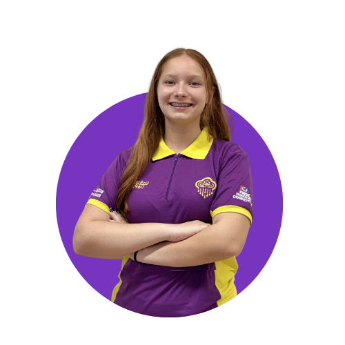
Maria Clara
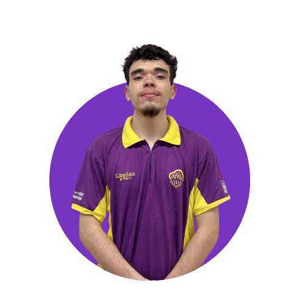
Rafael Kalegari
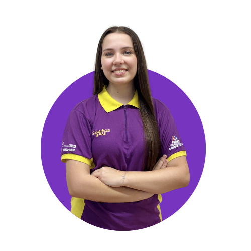
Julia Carvalho
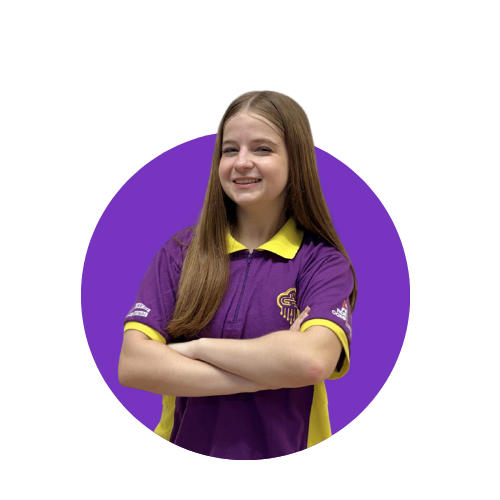
Vitória da Silva
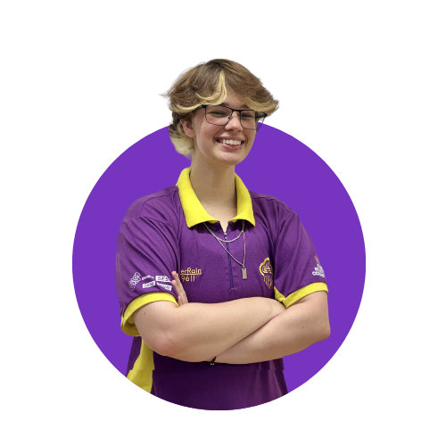
Louie Ripper
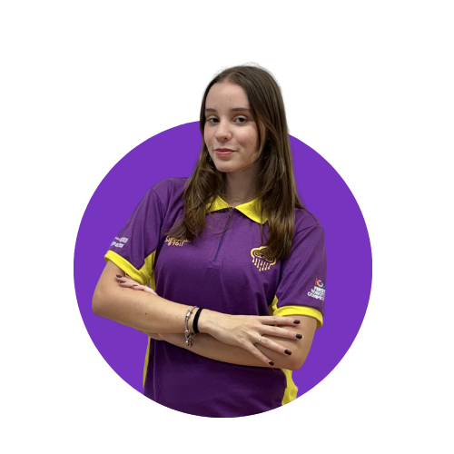
Helena Haeckel
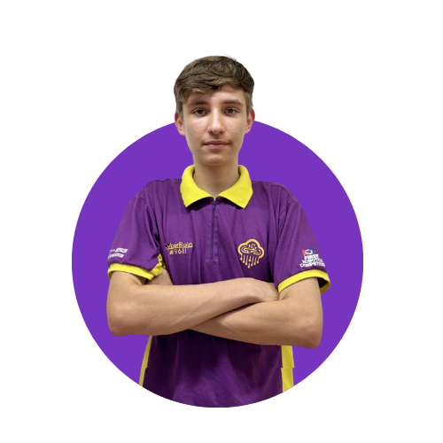
João Abadi
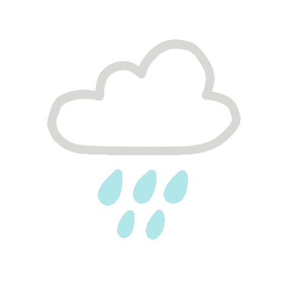